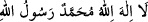

Mesnevî’de der ki:
İki deniz gibi olan gözlerimin incilerle dolması için
Gam toprağını gözüme sürme gibi çekmekteyim.
Halkın onun için döktüğü gözyaşları
İncidir; halk gözyaşı sanır.
Yusuf değilsen bile Yakup ol;
Onun gibi matlûbuna erişmek için ağla!
Yusuf ’a karşı nazlanma, güzellik iddia etme!
Yakubçasına ah ile niyâz etmekten başka bir şey yapma!
Her ağlamanın sonu gülmektir.
Sonunu gören adam, mübarek bir kuldur.
Vehb şöyle demiştir: “Hz. Âdem’in ağlaması çoğalınca Allah ona şöyle demesini
emretti: “Senden başka ilâh yoktur. Seni hamdinle tesbih ederim. Ben bir kötülük
işledim, nefsime zulmettim, beni bağışla. Sen, bağışlayanların en hayırlısısın.” Âdem
(a.s.) bu duâyı etti, sonra Allah şöyle buyurdu: “De ki: Seni tesbih ederim. Senden
başka ilâh yoktur. Ben bir kötülük işledim, nefsime zulmettim. Bana merhamet eyle. Sen,
merhamet edenlerin en hayırlısın.” Sonra Allah şöyle buyurdu: “De ki: Seni tesbih
ederim. Senden başka ilâh yoktur. Ben bir kötülük işledim, nefsime zulmettim. Tevbemi
kabul eyle. Çünkü sen tevbeleri çok kabûl edensin.”[112]
İbn Abbâs (r.anhümâ) şöyle demiştir: “İşte bu kelimeler, Âdem’in Rabb’inden ilhâm
yoluyla aldığı kelimelerdir (bk. el-Bakara, 2/37).”
Ömer b. Hattâb (r.a.)’dan Rasûlullah (s.a.)’ın şöyle buyurduğu rivâyet edilmiştir:
“Âdem (a.s.) hatâsını îtiraf ettiği vakit: “Ey Rabb’im, Muhammed (a.s.)’ın hakkı için
beni affetmeni dilerim.” dedi. Bunun üzerine Allah Teâlâ:
“Ey Âdem, sen Muhammed’i nereden biliyorsun? Henüz ben onu yaratmadım.”
buyurdu. Âdem (a.s.):
“Beni (kudret) elinle yaratıp, bana rûhundan üflediğinde başımı kaldırdım arş-ı
a‘lânın sütûnlarında;
“Allah’tan başka ilah yoktur, Muhammed O’nun
Rasûlüdür.”diye yazılı olduğunu gördüm. Ben bilirim ki sen isminin yanına ancak
yarattıklarından sana en sevimli olanını yazarsın.” diye cevap verdi.
Allah Teâlâ:
“Doğru söyledin ey Adem! Muhammed, yarattıklarım içinde bana en sevimli
olandır. Artık seni bağışladım. (Bil ki) Muhammed olmasaydı, seni de yaratmazdım.”
buyurdu.” Bu rivâyeti Beyhakî Delâil’inde zikretmiştir.[113]
Büyüklerden birisi şöyle demiştir: “İşlediği hatâdan ötürü Âdem’i dünyaya indirip
orada çeşitli zorluklarla yüz yüze getirerek cezâlandırması, Allâh’ın lütuf ve